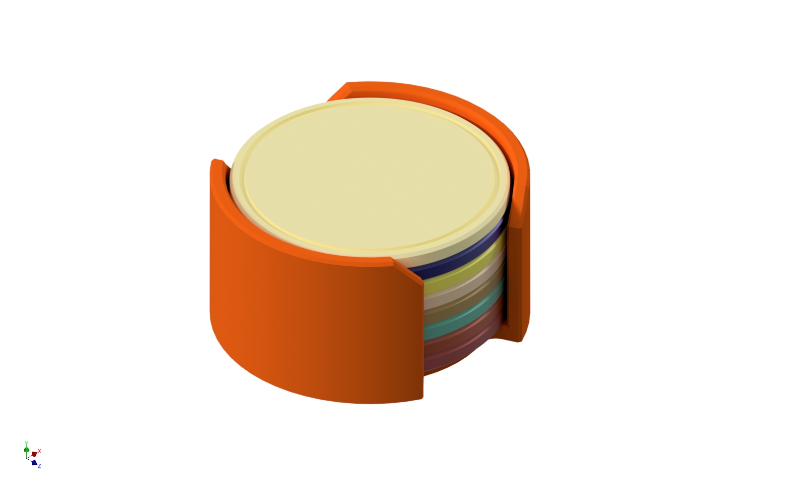

This project started with a simple request from family: create drink coasters that would actually last. Cork coasters crumbled and broke, paper coasters dissolved or wore out quickly—neither option was acceptable for daily use. The solution? 3D printed coasters in PETG with integrated storage holders for 4 or 8 coasters.
The design includes a clever organizational feature: print each coaster in a different color. When the whole family gathers, everyone knows which glass is theirs by the coaster color. No more confusion about whose drink is whose—just track your color. The holders keep the coasters neatly stacked and accessible on the table or counter.
Simple, functional, and durable. As the saying goes, in simplicity there is beauty.
Print settings:
Material: PETG (heat resistant and durable)
Perimeters: 4 walls
Infill: 30%
Layer height: 0.2mm
Supports: None required
Print time: ~50 minutes per coaster
Filament usage: ~25.5g (~8.5m) per coaster
Pro tip: Experiment with infill patterns (gyroid, honeycomb, grid) to create interesting visual designs visible through the coaster surface. Different patterns create different aesthetic effects.
Print each coaster in a different color—this lets family members easily identify their own glass. Need 4 coasters? Use 4 different colors. Need 8? Use 8 different colors.
Choose between the small holder (4 coasters, ~2 hours) or large holder (8 coasters, ~3.5 hours). Use the same print settings as the coasters: PETG, 4 perimeters, 30% infill, 0.2mm layer height, no supports.
The holder keeps coasters organized and accessible on your table or counter. Print the holder in a neutral color or match it to your décor.
No assembly required—just stack the coasters in the holder. Each coaster is ready to use immediately after printing. The PETG material resists heat from hot beverages and wipes clean easily with a damp cloth.
The flat surface of coasters provides a perfect canvas for experimenting with infill patterns. Gyroid creates flowing organic shapes, honeycomb produces geometric hexagons, grid offers clean lines—each pattern creates unique visual effects visible through the top surface. This simple project became an opportunity to explore how functional settings (infill) can serve aesthetic purposes.
Try printing sample coasters with different infill patterns to see which design you prefer. The structural requirements are minimal, so you're free to prioritize appearance.
✅ No Problems Encountered
This project was problem-free from start to finish. The simple geometry, no-support design, and straightforward printing made it a perfect example of functional design that "just works." Everything printed correctly on the first attempt.